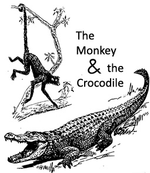

The Monkey and the Crocodile: Reading Comprehension
Read the story and answer the questions.
Click on the box beside the correct answer.
The Monkey and the Crocodile
Once there was a monkey who lived in a naval tree beside a river. This naval tree produced more fruit than any other tree in the jungle, and its fruit was fresher and sweeter than the fruit on all the other trees.
Every day when the monkey ate this fruit, he was very happy. Not only could he eat his fill, but he could throw some fruit into the river when his friend the crocodile came by. The crocodile and the monkey spent many hours sitting on the shore of the river and talking, and in time they became best friends.
The crocodile always took some fruit home to his dear wife. She loved the naval fruit so much that she became addicted to its taste and freshness. One day she thought, “If the monkey eats this fruit every day, then his flesh must also taste sweet, especially his liver. Oh, I want to taste the monkey’s liver.” She thought about it and thought about it until she couldn’t stand it any longer.
Finally she said to her husband, “I want to taste the monkey’s liver. Please bring him home, so I can satisfy my hunger.”
The crocodile was shocked! “You want to eat the monkey’s liver? But . . . he’s my friend! I love him. And he’s so generous to us. My dear, it’s impossible.”
The lady crocodile became angry. She demanded that he bring the monkey to her. She demanded that he let her taste the monkey’s liver. Otherwise she would leave.
The crocodile was torn apart. He loved his wife, and didn’t want to lose her. He loved his friend, and didn’t want to lose him. Why did he have to make this difficult choice?
In the end, he decided to lose his monkey friend. With a heavy heart, he swam slowly back across the river and sat under the naval tree.
“Oh Monkey,” he called, “It’s a lovely night, and I feel like going for a ride on the river. Why don’t you come along? I could show you the beauty of the river.”
“I don’t think so,” said the monkey. “I don’t think that’s a good idea. And anyway, I can’t swim, and I’m afraid of the water.”
“I am the king of the river. You don’t need to be afraid when you ride on my back. Besides, we’ve been friends for a long time. What a shame it would be if you can’t trust me by now.”
The monkey thought for a minute. Perhaps the crocodile was right. Who can you trust, if not your friends? “OK,” he said, “I’ll come with you.” He jumped onto the crocodile’s back, and they sailed into the river.
It was a wonderful ride, and the monkey was really happy, but the crocodile was quiet, and deep in thought.
“What’s the matter?” asked the monkey.
The crocodile almost burst into tears. “I’m sorry, my friend. I lied to you. I am not doing this to entertain you. Rather, I am taking you to my wife. She wants to eat your liver.”
“Eat my liver!!” The monkey was astonished. “Why does she want to eat my liver?”
“She knows that you eat the fruit of the naval tree every day. She thinks that your liver must be very sweet and tender, so she wants to eat it.”
“I see,” said the monkey. He saw that his life was in danger. He thought for a minute. “My friend, don’t feel bad on my account,” he said. “I would be honored to give my liver to your wife. But you should have told me about this before we left the naval tree.”
“Why?” asked the crocodile.
“Well, I always wash my liver in the river and then hang it on a branch of the tree.”
“Oh?”
“If you take me back to the tree, I’ll get it for you. Then you can take it to your wife.”
The crocodile swam quickly back to the naval tree. When he got to the shore, the monkey jumped off his back and climbed up the tree.
“Hah! Crocodile! Don’t you know that I can’t give you my liver? This has been a good lesson to me about trust.”
Credits:
An Indian folk tale retold by Mary Mahoney
Audio version performed by Cam Culham
Audio effects adapted under Creative Commons license
Audio credits: Chimes
Public Domain photo credit: Composite of Prehensile tail Wikipedia and CC0 Public Domain on Pixabay